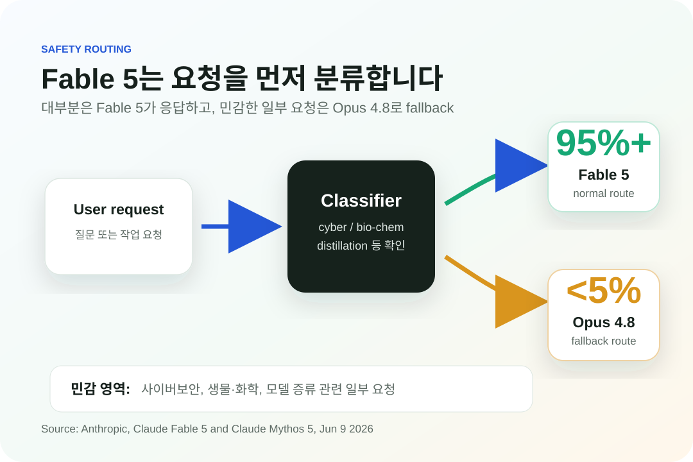

Fable 5와 Mythos 5가 중요한 이유
이 글은 Anthropic 공식 발표에서 직접 언급된 내용만 다룹니다. 하드웨어나 산업·공장 이야기는 이번 원문에 직접적인 핵심 내용으로 나오지 않으므로 억지로 연결하지 않습니다.
핵심은 “강한 모델을 어떻게 공개할 것인가”입니다
이번 발표에서 중요한 부분은 모델 이름 자체보다 공개 방식입니다. Anthropic은 같은 기반 모델을 두 가지 방식으로 나눴습니다. 일반 사용자에게는 안전장치를 적용한 Fable 5를 제공하고, 더 민감한 기능이 필요한 사이버 방어자와 일부 연구자에게는 Mythos 5를 제한적으로 제공합니다.

가격은 공개 사용을 염두에 둔 구조입니다
Anthropic은 Fable 5와 Mythos 5를 입력 100만 토큰당 10달러, 출력 100만 토큰당 50달러로 제시했습니다. 원문은 이 가격이 Claude Mythos Preview의 절반 미만이라고 설명합니다.

사용자가 볼 변화
| 구분 | 내용 |
|---|---|
| Fable 5 | 일반 사용자에게 제공. 일부 민감 영역은 Opus 4.8로 fallback. |
| Mythos 5 | Project Glasswing 및 신뢰 접근 프로그램 중심의 제한 접근 모델. |
| 가격 | 입력 1M 토큰 $10, 출력 1M 토큰 $50. |
| 구독 플랜 | 2026년 6월 22일까지 일부 플랜에 포함, 6월 23일부터 사용량 크레딧 필요. |
이번 글에서 다루지 않는 것
이 발표는 주로 모델 성능, 안전장치, 접근 권한, 가격, 연구·사이버보안 사용 사례를 다룹니다. GPU, 반도체, 데이터센터, 공장 설비 같은 주제는 원문에서 중심 내용으로 직접 다루지 않기 때문에 이 글에서는 확장하지 않습니다.